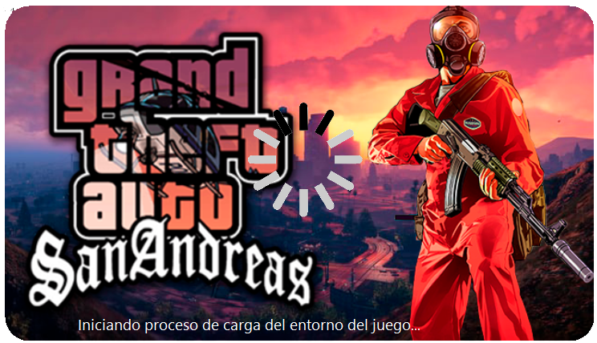
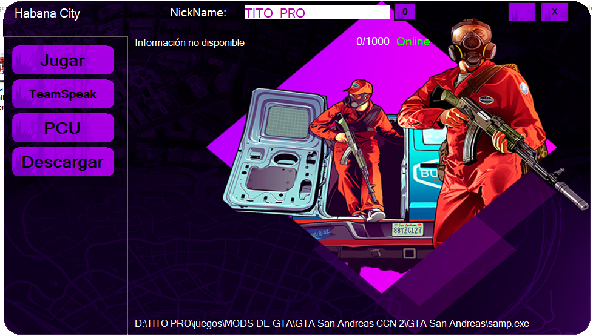
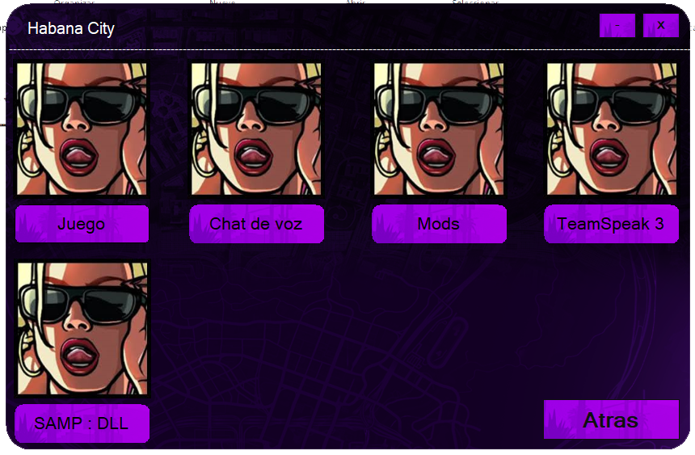
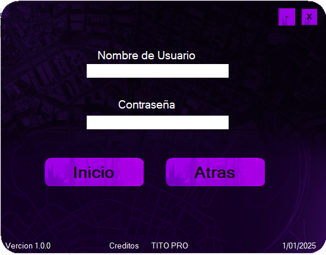

HabanaCity-Launcher es un launcher personalizado para GTA SAMP diseñado específicamente para el servidor HabanaCity.
Características destacadas:
• 🔐 Registro de PCU: Sistema único de identificación por hardware para prevenir cuentas múltiples
• 🎙️ Integración con TeamSpeak (TS): Conexión directa con el servidor de voz de la comunidad
• 🎨 Diseño único: Interfaz moderna y personalizada con la temática de HabanaCity
• 📦 Actualizaciones automáticas: Sistema de parches y actualizaciones integrado
• 🛡️ Anti-trampas: Protección contra modificaciones no autorizadas
• 📊 Estadísticas del jugador: Panel con información de progreso y actividad
Este launcher mejora significativamente la experiencia de juego, ofreciendo una entrada segura y rápida al servidor.



